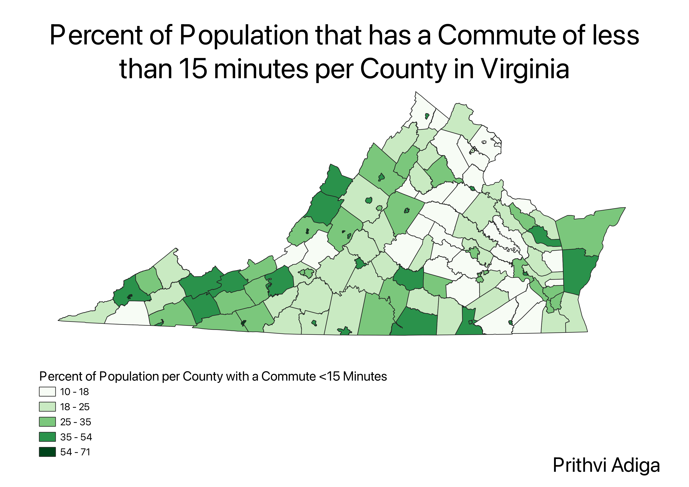

Homework 6pt1: Census data choropleth
Prithvi Adiga
This is a Choropleth map of Virginia that shows the percent of the population per county that is able to commute to work in under 15 minutes. The range is 10 - 71%.
I made the map by getting a CSV file from the census website that displayed the number of people per county that had a commute of a certain time length, split into
five minute intervals. I then took the first three of these intervals, added them together, divided them by the totals and multiplied by 100 to get the percentage.
I then changed the formats of the county names and county codes in order to match the shapefile of VA counties that I already had, so that I could join the attribute
table of my CSV file to the location data contained in the shapefile. After doing all this, I was able to set the map to be a choropleth by changing its symbology in the
properties menu

Data Used for this project
CSV Dataset
Link to Shapefile